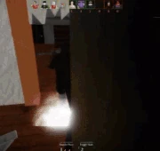
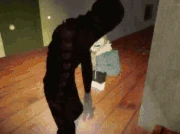

Fogborn is the fourth monster added in Pillar Chase 2. It is a tall, shadowy entity based off of a Minecraft horror mod, The Man From The Fog and it's titular mob. It can currently be unlocked for 1250 coins in the shop..
|  When pressing 1 Fogborn will strike lightning down onto its current location and disappear, becoming incredibly fast before reappearing in a second lightning strike with a second press. While Thunder Warp is active, it cannot attack, regeneration/drain of stamina stops, and The Fogborn begins emitting quiet storm sounds that become louder whenever it's near a player. When The Fogborn reappears, there is a 1.25s of endlag during which it cannot sprint or attack. For a second, all players will be highlighted after activating Thunder Warp. Both lightning strikes from entering and exiting Thunder Warp can be heard from across the map. Has a cooldown of 13 seconds. |
 When pressing 2 Fogborn will whistle and stand still for about five seconds. If someone looks at it during this state, it will be struck by lightning, and the player that triggered the ability will be highlighted in red. For the duration of Foggy Stare, multiple things will occur. The Fogborn's sprint animation and attack animation will be replaced with a crawling animation and bite respectively, its stamina usage will be reduced, it will become incredibly fast, its M1 speed will become faster, and all players who haven't yet triggered Foggy Stare during that game will be "darkened" for about 3.5 seconds and will be immune to The Fogborn's attacks for the duration of the ability. After nine seconds, the effects of Foggy Stare will end. Foggy Stare has a cooldown of 16 seconds and will only begin the cooldown once a player has triggered it or it times out. If the latter, The Fogborn will receive 40 stamina in return. |